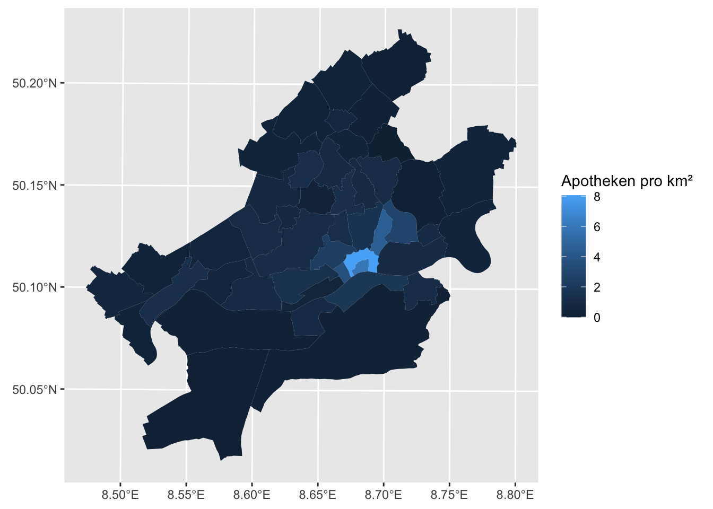

Sitzung 6 Geodaten verschneiden (HOS)
6.1 Aufgaben
Erstellen Sie eine Choroplethenkarte der Frankfurter Stadtteile, in der Sie die Anzahl bzw. die Dichte von Apotheken darstellen. (Schritte analog zu oben.)
# Aus dem OSM-Wiki erfahren wir, dass die Abfrage lautet: amenity=pharmacy # Auf Overpass Turbo lässt sich das Resultat als geoJSON exportieren. stadtteile %>% st_transform(4326) %>% st_covers(st_read("resources/apotheken.geojson")) %>% lengths() -> stadtteile$anzahl_apotheken ## Reading layer `apotheken' from data source ## `/Users/till/mzs/2021_methodenwoche/skript/resources/apotheken.geojson' ## using driver `GeoJSON' ## Simple feature collection with 257 features and 61 fields ## Geometry type: GEOMETRY ## Dimension: XY ## Bounding box: xmin: 8.466004 ymin: 50.04214 xmax: 8.834962 ymax: 50.21252 ## Geodetic CRS: WGS 84 stadtteile %>% mutate(qkm = st_area(.) %>% as.numeric() / 1000 / 1000, apothekendichte = anzahl_apotheken/ qkm) %>% ggplot() + geom_sf(aes(fill = apothekendichte), color = NA) + scale_fill_continuous("Apotheken pro km²")
Welche Stadtteile haben mehr Kioske? Welche mehr Apotheken? Wie ausgeprägt ist das Verhältnis? Erstellen Sie eine Karte, die das zum Ausdruck bringt.
stadtteile %>% mutate(ratio = (anzahl_apotheken - anzahl_kioske) / (anzahl_apotheken + anzahl_kioske)) %>% ggplot() + geom_sf(aes(fill = ratio), color=NA) + scale_fill_continuous(NULL, type = "viridis", breaks = seq(1, -1, -0.5), labels = c("nur Apotheken", "mehr Apotheken", "gleiche Anzahl", "mehr Kioske", "nur Kioske")) + theme_void()
(Achtung, knifflig!) Siemens veröffentlicht einen Blitzatlas. Laden Sie den Datensatz herunter und bauen Sie die folgende Ansicht nach:
"resources/Uebersicht-Blitzeinschlaege-2019.xlsx" %>% readxl::read_excel() %>% rowwise() %>% mutate(Dichte2016 = `Dichte 2016`, DichteGesamt = mean(c(Dichte2015, Dichte2016, Dichte2017, Dichte2018, Dichte2019)), kreis = `Stadt- oder Landkreis` %>% str_remove("(LK) |(SK) ")) %>% select(-`Dichte 2016`) %>% pivot_longer(starts_with("Dichte"), names_prefix = "Dichte", names_to = "Jahr", values_to = "Blitzdichte") %>% select(kreis, Jahr, Blitzdichte) -> blitze # Landkreise gibt es z. B. vom GDZ: https://gdz.bkg.bund.de/ # Datensatz: Verwaltungsgebiete 1:250 000 mit Einwohnerzahlen (Ebenen) "resources/vg250-ew_3112.gk3.shape.ebenen/vg250-ew_ebenen_3112/VG250_KRS.shp" %>% read_sf() %>% filter(str_detect(RS, "^06")) %>% left_join(blitze, by = c("GEN" = "kreis")) %>% ggplot() + geom_sf(aes(fill = Blitzdichte), color=NA) + facet_wrap(~Jahr) + scale_fill_continuous(type="viridis") + theme(axis.ticks = element_blank(), axis.text = element_blank(), panel.grid = element_blank())